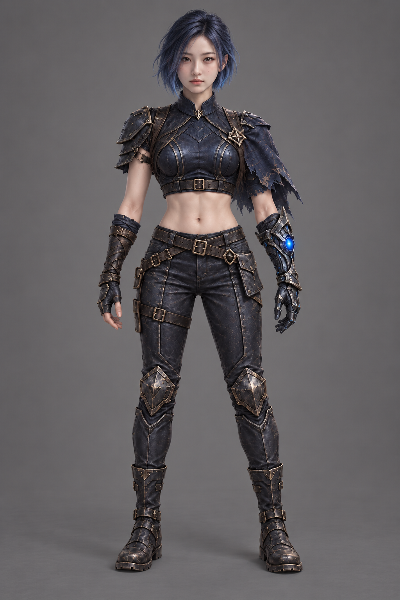
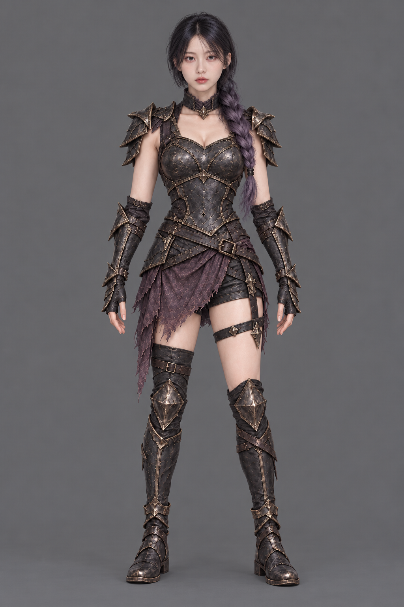
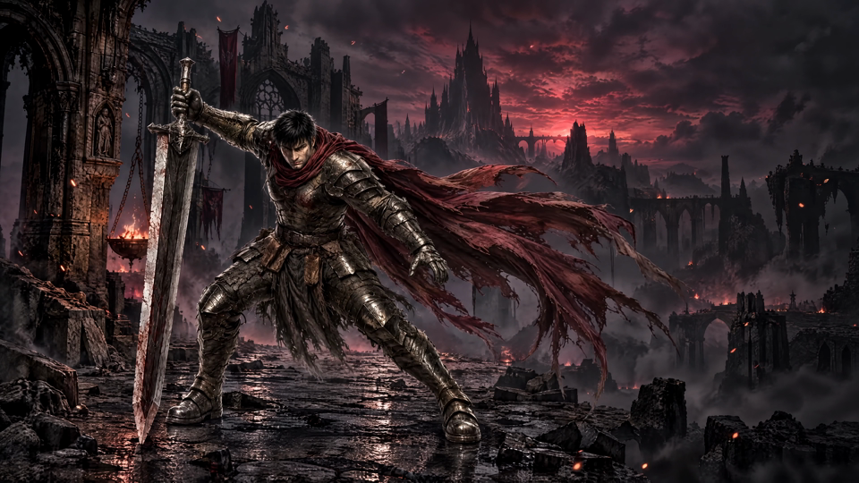
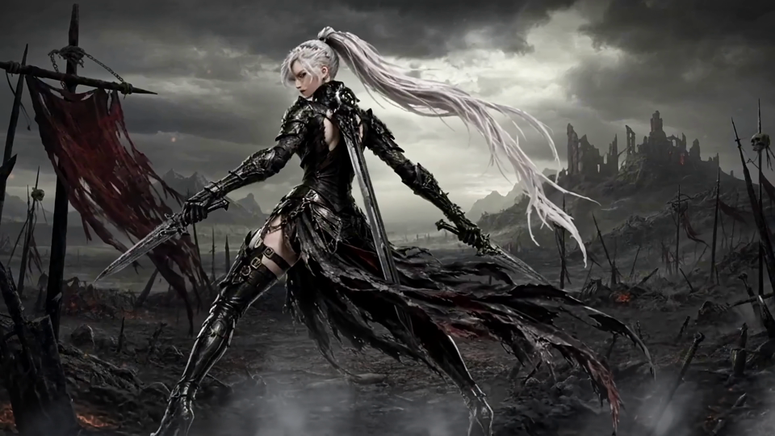
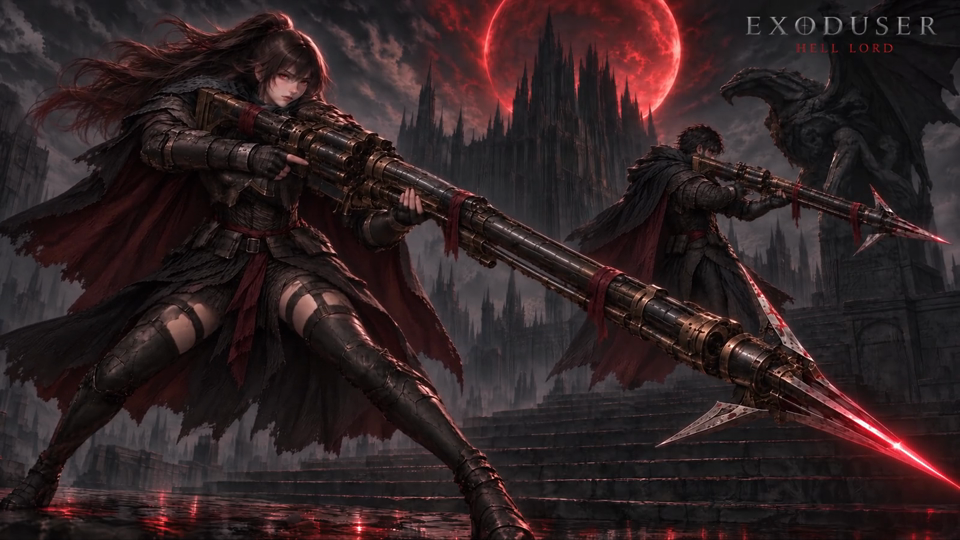
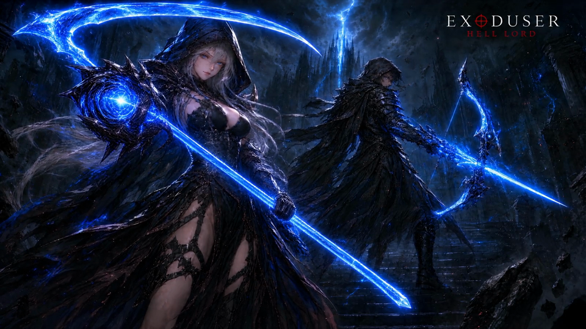
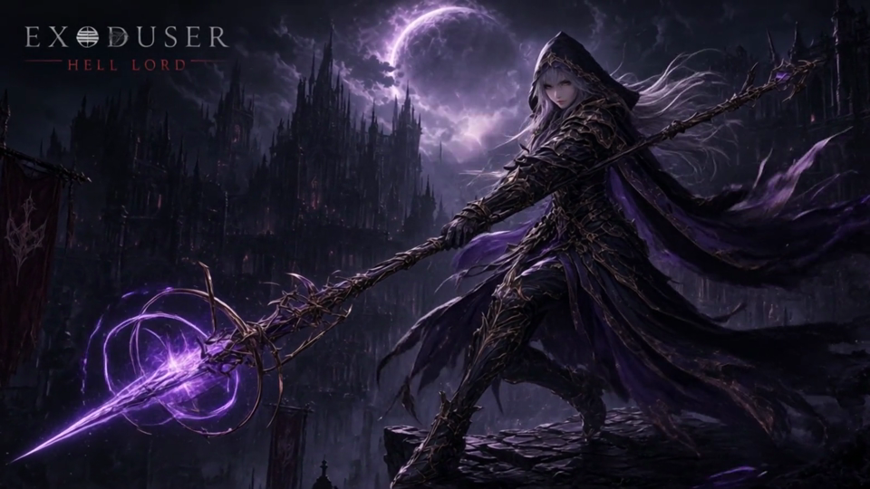

변성술사 · 푸른 단발

원본 크게 보기 ↗고정 얼굴 원형

어깨·팔의 부피를 줄이고 여성적인 몸선과 자연스러운 탄력을 살렸습니다. 생성창 애니메이션의 재질·큰 실루엣을 참고했고, 얼굴 원형은 유지했습니다.

원본 크게 보기 ↗
원본 크게 보기 ↗





각 영상의 3개 시점을 확인했습니다. 전시용 대기 동작·천/머리·이펙트 참고이며 실제 보행/공격 리그가 아닙니다.